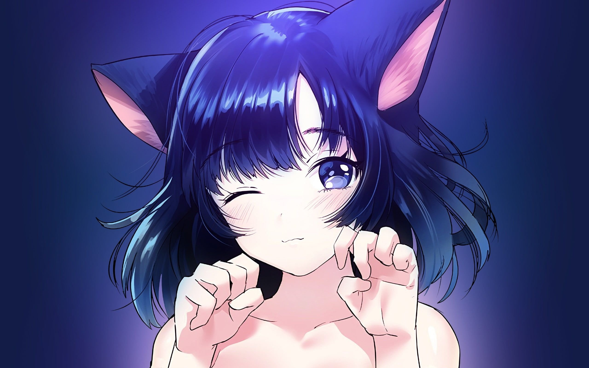

Девушка-кошка, также кошкодевочка (яп. 猫娘 нэкомусумэ, англ. Catgirl) — девушка, обладающая кошачьими ушками (либо настоящими, либо в дополнение к человеческим), хвостом или другими чертами семейства кошачьих, в остальном имеющая полностью человеческое тело. Девушки-кошки встречаются в различных жанрах художественной литературы, в частности, в аниме и манге, в различного рода комиксах и видеоиграх, а также в виртуальных интернет-сообществах, таких как Nekos в Second Life. Образ девушки-кошки также часто используется для косплея.

Мифология
В японской мифологии кошек чаще всего изображали в виде бакэнэко — кошки, наделённой мифическими способностями[4].
Женщины-кошки также иногда изображаются в виде оборотней, но тем не менее, помогая людям, наделены добрыми качествами. Часто бывают волшебными помощниками героев в мифах и легендах. Как и лисы, девушки-кошки могут быть очень опасны. В человеческом облике демонстрируют сверхчеловеческую гибкость, подвижность и хитрость. Сохраняют кошачью расцветку тела. Также женщины-кошки в японской мифологии — это прекрасные девы, которые могут преобразовываться в кошек, в обмен на свою красоту.
Современный образ
Кошачьи уши (яп. 猫耳 нэкомими) или хвост являются незаменимой частицей любой девушки-кошки. Часто атрибутами нэко являются мохнатые лапы, сильно выпирающие клыки, а также бубенчики, надеваемые на самые разные части тела: шею, лапы, уши или хвост. Когда персонаж аниме или манги произносит или думает что-нибудь озорное, его рот иногда изображается похожим на кошачий.